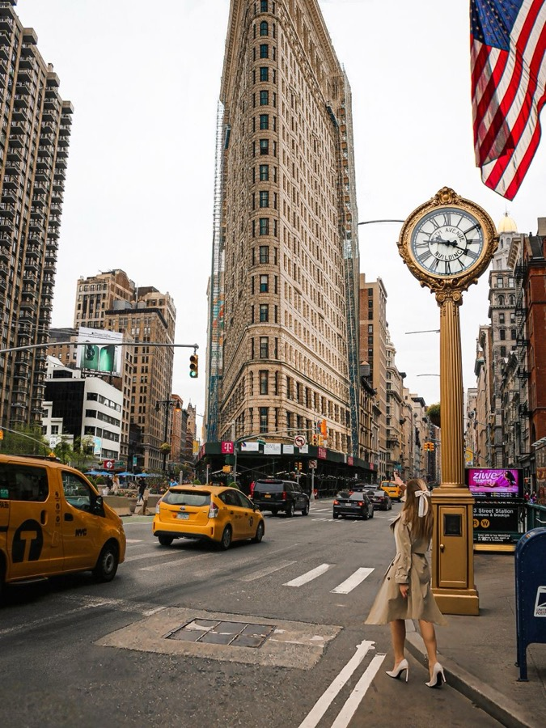
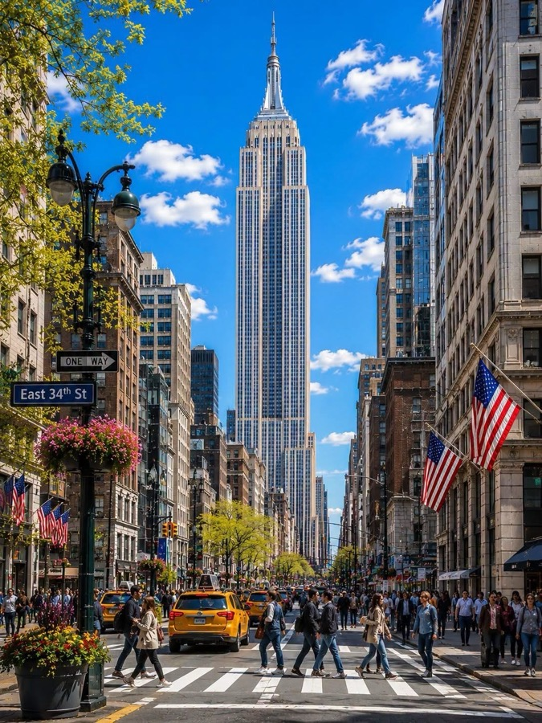

Segunda · 14 de setembroChegada & primeiro impacto
Tudo a pé-
Pouso em Miami
07h00Chegada do voo internacional GRU → MIA. Imigração americana + retirada de bagagem acontecem aqui.
Conexão de ~4h28 até o próximo voo — dá folga para imigração, esteira e um café antes de embarcar de novo.
-
Embarque Miami → JFK
11h20Trecho doméstico, ~2h50 de voo.
-
Pouso no JFK
14h30Desembarquem e sigam direto para o AirTrain, no Terminal 4.
-
JFK → Manhattan
15h15Do desembarque até o Carlton Arms: AirTrain + duas linhas de metrô. Em cada uma, confiram a direção indicada no letreiro da plataforma — é o nome final da linha, e é o jeito de saber se estão do lado certo.
AirTrain👣 2 min até o metrô, entrando pela Sutphin BoulevardE👣 5 min até a estação 51 St · passagem interna — não precisa subir à rua, é tudo interligado por baixo6👣 7 min até o Carlton Arms Hotel · saída Park Ave South & E 23rd St💰 AirTrain US$ 8,50 + Metrô US$ 3,25 · Total US$ 11,75 por pessoa · ⏱️ ~1h16 no total. 💳 Pagamento por aproximação — cartão ou celular.
-
Check-in no Carlton Arms
17h30Da estação 23rd St (6) são 5 min a pé. Chegando mais cedo, sobra quase 1h de folga antes de sair — banho, descanso, ajuste do fuso.
-
👣 7 min · pela E 25th até Madison Ave
-
Madison Square Park
18h30Storytelling
Antes de virar parque em 1847, esse terreno já foi cemitério para os pobres da cidade e depois um paiol do exército — só ganhou grama e bancos décadas depois. Foi aqui, não na 8ª Avenida, que ficava o primeiro Madison Square Garden, erguido em 1879 bem na esquina do parque. E entre 1876 e 1882 o braço com a tocha da Estátua da Liberdade ficou exposto exatamente aqui, como estratégia pra arrecadar dinheiro pra construir o resto da estátua — dá pra imaginar o choque de ver só um braço gigante de cobre no meio do gramado.
Hoje é um respiro verde cercado de prédios lindos — o Flatiron de um lado, o MetLife Tower do outro. De dia é nitidamente um parque de gente da região: executivos do Flatiron District almoçando na grama, moradores levando cachorro pro dog run (um dos mais concorridos de Manhattan), fila que não acaba no Shake Shack original — que abriu ali em 2004 como um carrinho de cachorro-quente e virou fenômeno mundial. Turista, no geral, passa rápido: para pra foto do Flatiron na ponta sul e segue viagem. Mas se vocês sentarem uns minutos num banco, dá pra sentir o parque como ele realmente é — o point do bairro, não uma atração.
Primeira respirada em Nova York. Vista clássica do Flatiron pela ponta sul do parque.
-
Flatiron Building
18h50Storytelling
O Flatiron nasceu em 1902, projetado por Daniel Burnham, num terreno triangular formado pelo cruzamento da Broadway com a 5ª Avenida — daí o formato de ferro de passar que deu o apelido (o nome oficial é Fuller Building). Com 87 metros e 22 andares, foi um dos primeiros arranha-céus de estrutura de aço da cidade e, na época, uma das construções mais altas do mundo. A ponta é tão fina que virou lenda urbana — apostavam quanto tempo levaria pra ele desabar com o vento.
O formato triangular cria correntes de vento na esquina que, no início do século 20, levantavam as saias das mulheres que passavam ali — e o lugar virou ponto de encontro de homens querendo ver a cena, até a polícia começar a afastá-los gritando "23 skidoo" (o número da rua ali do lado, a 23rd Street), expressão que entrou pro inglês americano como sinônimo de "dar o fora rápido". Hoje o cruzamento continua sendo um dos mais fotografados de Nova York — turista para no meio da calçada, vira pra trás, e tenta pegar o prédio inteiro entrando no enquadramento.
📸 Inspiração pra Carimbar

-
👣 12 min · subindo a 5ª Avenida
-
Empire State Building · por fora
19h15Storytelling
O Empire State foi erguido em apenas 410 dias, entre 1930 e 1931 — auge da Grande Depressão, quando Nova York mais precisava de empregos. Ele venceu a corrida contra o Chrysler Building pelo título de prédio mais alto do mundo, e segurou essa coroa por quase 40 anos, até o World Trade Center em 1970. O mastro no topo foi projetado pra ser um ponto de atracação de dirigíveis — um plano que nunca funcionou de verdade, porque os ventos lá em cima eram fortes demais até pra tentar.
Por anos, com tantos andares vazios na Depressão, os nova-iorquinos apelidaram o prédio de "Empty State Building" (Prédio do Estado Vazio). Foi King Kong escalando ele em 1933 que virou o edifício em ícone mundial da cultura pop. Hoje, à noite, o topo se ilumina com cores diferentes conforme a data — verde no St. Patrick's, vermelho e verde no Natal, arco-íris no Pride — quase um calendário de Nova York em luz. Do chão, o point pra foto é a esquina da 5ª com a 34th, onde dá pra ver o prédio inteiro sem inclinar o pescoço.
📸 Inspiração pra Carimbar

-
👣 4 min · descendo até a W 32nd
-
Koreatown · W 32nd St
19h35Uma quadra inteira de letreiros coreanos empilhados em prédios. Barato, aberto até tarde e visualmente incrível.
-
Herald Square · Macy's
19h55 -
👣 10 min · pela Broadway ou 6ª Av
-
Bryant Park & Biblioteca Pública
20h20O parque à noite com os prédios em volta acesos. Os leões Patience e Fortitude ficam na entrada da 5ª Av.
🚻 Os banheiros do Bryant Park são os mais bonitos e limpos de Nova York — e gratuitos. Fecham às 22h.
-
👣 9 min · pela W 42nd rumo oeste
-
Times Square
20h50O fecho de maior impacto. Suba nas arquibancadas vermelhas da TKTS (47th) para a vista de cima.
📸 Melhor take: no meio da ilha de pedestres entre a 44th e a 45th, câmera baixa apontando para cima.
-
Volta para o Carlton
22h00Metrô N/R/W de 49th St até 23rd St + 6 min a pé. Ou 1 de Times Sq até 23rd St.
Onde comer neste trecho
- Joe's Pizza · 1435 Broadway, Times Sq — a fatia clássica de NYUS$ 4–5
- 2 Bros Pizza · 32 St Marks / várias — a fatia mais barata da cidadeUS$ 1,50–2
- Koreatown · corndogs, mandu e bibimbap na W 32ndUS$ 8–15
- 7-Eleven · água e snacks para o dia seguinteUS$ 5–8
| Item | Casal |
|---|---|
| Transporte — AirTrain + Metrô (JFK → Manhattan) | US$ 23,50 |
| Alimentação — jantar | ~US$ 11,50 |
| Total do dia | ~US$ 35 |